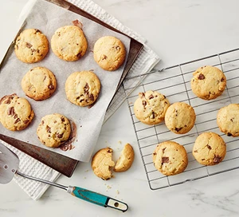

Cookie Recipe

Description
A cookie is a baked or cooked snack or dessert that is typically small, flat and sweet. It usually contains flour, sugar, egg, and some type of oil, fat, or butter. It may include other ingredients such as raisins, oats, chocolate chips, nuts.
Ingredients
- 225g butter, softened
- 110g caster sugar
- 275g plain flour
- 1 tsp cinnamon or other spices (optional)
- 75g white or milk chocolate chips (optional)
Steps
- STEP 1
Heat the oven to 190C/170C fan/gas 5. Cream the butter in a large bowl with a wooden spoon or in a stand mixer until it is soft. Add the sugar and keep beating until the mixture is light and fluffy. Sift in the flour and add the optional ingredients, if you’re using them. Bring the mixture together with your hands in a figure-of-eight motion until it forms a dough. You can freeze the dough at this point.
- STEP 2
Roll the dough into walnut-sized balls and place them slightly apart from each other on a baking sheet (you don’t need to butter or line it). Flatten the balls a little with the palm of your hand and bake them in the oven for around 10-12 mins until they are golden brown and slightly firm on top. Leave the cookies on a cooling rack for around 15 mins before serving.